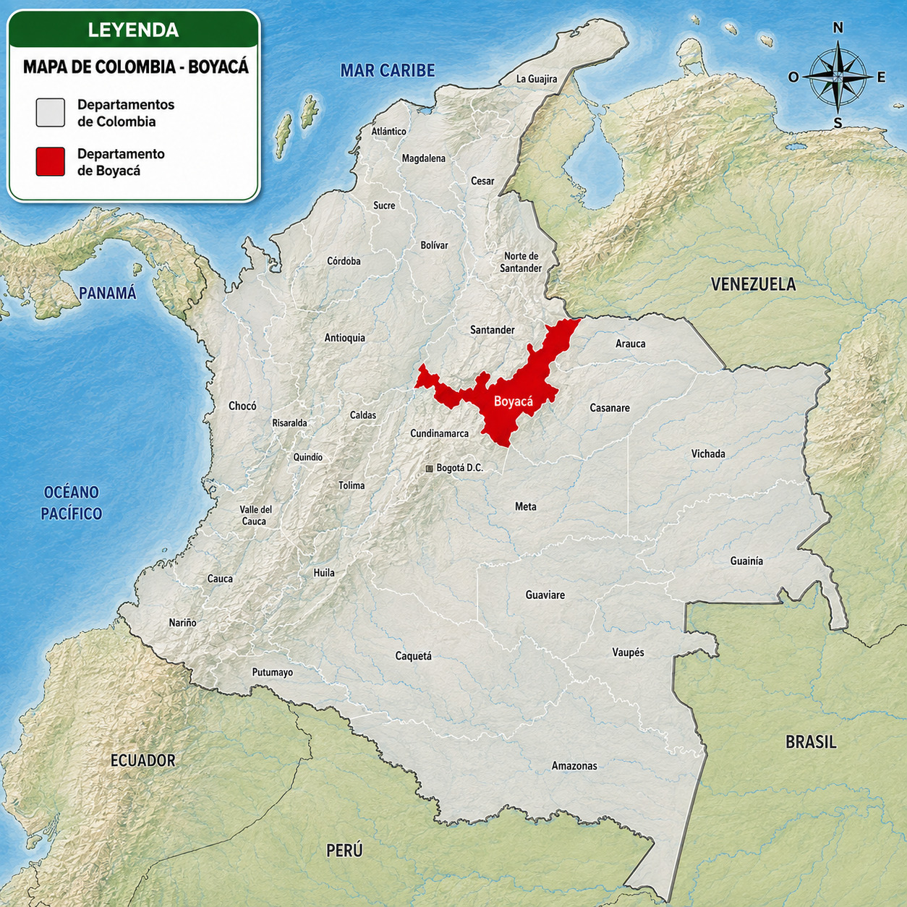
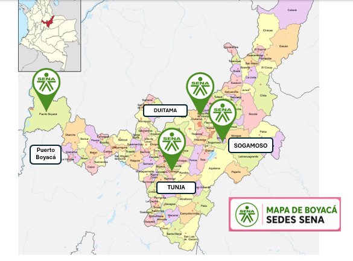

Información — Sede Tunja
Seis fichas de contexto sobre el centro de formación y el programa. Ábrelas para orientarte antes de empezar.
1. Ubicación Contexto

El programa se dicta en el Centro de Gestión Administrativa y Fortalecimiento Empresarial (CEGAFE), en la ciudad de Tunja.


2. Qué es CEGAFE Institucional
CEGAFE es la sigla del Centro de Gestión Administrativa y Fortalecimiento Empresarial, el centro de formación del SENA que aloja este programa dentro de la Regional Boyacá.
3. El programa en esta ficha Programa
La ficha 3293836 forma tecnólogos en Análisis y Desarrollo de Software (ADSO), en jornada de la mañana, con una duración de 24 meses.
4. La plataforma SGMA-ADSO Plataforma
Esta plataforma es un Ambiente Virtual de Aprendizaje (AVA) llamado SGMA-ADSO, el Sistema de Gestión y Monitoreo Académico del programa: centraliza contenidos, actividades, evidencias y seguimiento.
5. Los tres roles Roles
La plataforma atiende tres roles: el Aprendiz recorre contenidos y presenta actividades, el Instructor arma el plan formativo y valida resultados de aprendizaje, y el Administrador gestiona usuarios, fichas e instructores.
6. Cómo se organiza el contenido Navegación
El panel del aprendiz agrupa sus hojas en tres secciones: Investiga (contenidos y guías), Formación (ejecución de la sesión) y Resultados (avance, plan de mejoramiento y puntajes).